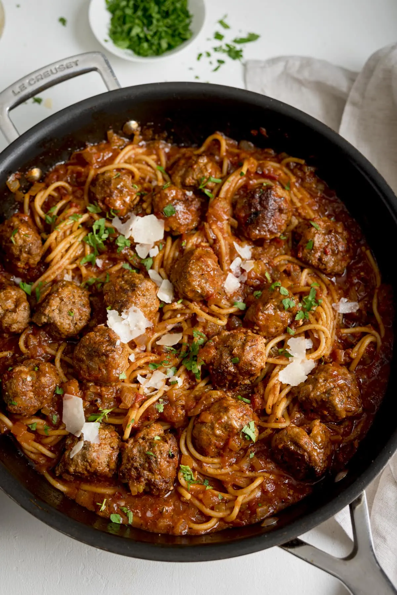

One Pan Spaghetti and Meatballs

Description
Spaghetti and Meatballs all made in ONE pan. The meatballs are juicy with a light crust and cooks in the ragu absorbing flavour.
Ingredients
- 500g minced beef
- 1/2 a large onion
- 1 egg
- 3 tbsp grated parmesan
- 3 tbsp panko breadcrumbs
- 1/4 tsp salt
- 1/4 tsp black pepper
- 1 tbsp oil
- 1 tbsp unsalted butter
Sauce
- 1/2 a large onion
- 2 celery sticks
- 2 garlic cloves
- 1/4 tsp salt
- 1/4 tsp black peper
- 400g tin of finely chopped tomatoes
- 2 tbsp tomato puree
- 1 tsp dried thyme
- 1 tsp light brown sugar
- 1 beef stock cube
- 600 ml just boiled water
- 200 g dried spaghetti
To serve
- shaved or grated parmesan
- 1 tbsp chopped fresh parsley
Instructions
- Place the minced beef, chopped onion, egg, parmesan, breadcrumbs, salt, and pepper into a large bowl.
- Mix together using your hands, then form the mixture into 16-20 meatballs.
- Heat the oil and butter in a large frying pan (skillet) and add in the meatballs.
- Cook for 5-6 minutes on a medium-to-high heat, turning two or three times, until the meatballs are browned all over.
- Now we start adding the sauce ingredients to the pan. Move the meatballs to one side of the pan (or just make a bit of space). Add the onion, celery, garlic, salt, and pepper.
- Cook for 3-4 minutes, stirring the vegetables a few times, until the onions start to soften.
- Add in the tin of tomatoes, tomato puree, thyme, brown sugar, crumbled stock cube, and the just-boiled water. Stir everything together and bring the sauce to the boil.
- Make a bit of space in the pan and add in the pasta (break it in half if it is too big to fit in your pan). Ensure the pasta is fully submerged in the sauce.
- Turn the heat down to low, place a lid on and cook for 10-12 minutes, stirring a couple of times, until the pasta is cooked.
- When the pasta is cooked, turn off the heat and divide the spaghetti between 4 bowls, using a set of tongs. Spoon the meatballs and sauce on top.
- Finish with a little shaved parmesan and chopped parsley and serve.